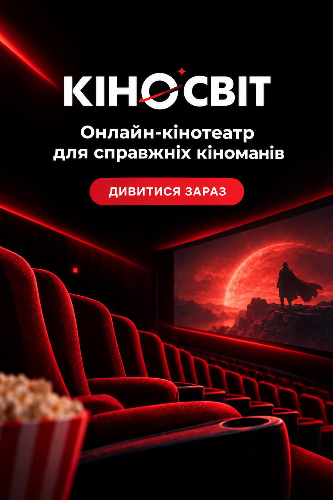
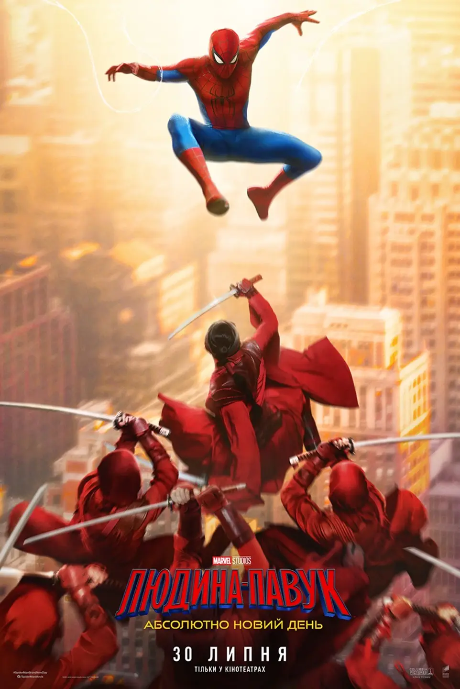
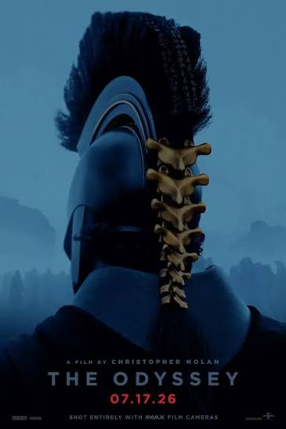

Оберіть фільм у каталозі та забронюйте місце на сеанс за кілька кліків.

Про проєкт
«Кіносвіт» — це онлайн-кінотеатр, де зібрана добірка
фільмів із детальною інформацією про режисерів, акторський склад
і касові збори. Сайт дозволяє обрати фільм і забронювати місце на сеанс.
Про добірку фільмів
У каталозі представлено десять фільмів різних жанрів. Для кожного
вказано тривалість, режисера та трьох ключових акторів.
Особливу увагу приділено касовим показникам — бюджету
та світовим зборам, за якими можна оцінити прибутковість стрічки.
Кожен фільм у каталозі супроводжується рейтингами глядачів
та переліком локацій зйомок, що дозволяє глибше зануритись
у процес створення улюбленої стрічки.
Людина-павук: Абсолютно новий день

Черговий фільм про пригоди супергероя Людини-павука, який
цього разу стикається з новою загрозою для міста. Стрічка
поєднує динамічні бойові сцени з елементами драми про
відповідальність та особистий вибір героя.
Одіссея

Постер фільму «Одіссея»
Масштабна екранізація давньогрецького епосу про мандри Одіссея
додому після Троянської війни — випробування морем, богами
та власними слабкостями.
Кіно починається там, де закінчуються слова.
Дізнатися більше про світовий кінематограф можна на
сайті IMDb.
Детальніше про нашу концепцію читайте у розділі
про добірку фільмів.